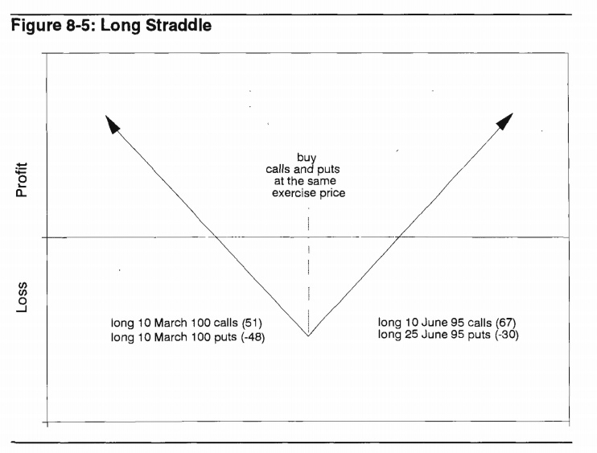

Option Volatility & Pricing, Advanced Trading Strategies and Techniques
Table of Contents
The language of options
Contract specifications
Two types:
- Call option: the right to buy or take a long position in a given asset at a fixed price on or before a specified data.
- Put option: the right to sell or take a short position in a given asset.
The difference between an option and a futures contract:
- A futures contract requires delivery at a fixed price. The seller must make delivery and the buyer must take delivery of the asset.
- The buyer of an option can choose to take delivery(a call) or make delivery(a put).
The exercise price, or strike price is the price at which the underlying will be delivered should the holder of an option choose to exercise his right to buy or sell.
expiration date: The date after which the option may no longer be exercised is the expiration date.
The premium paid for an option can be separated into two components, the intrinsic value and the time value.
The additional amount ofpremium beyond the intrinsic value which traders are willing to pay for an option is the time value, sometimes also referred to as the option's time premium or extrinsic value.
An option's premium is always composed of precisely its intrinsic value and its time value. If a $400 gold call is trading at $50 with gold at $435 per ounce, the time value of the call must be $15 , since the intrinsic value is $35. The two components must add up to the option's total premium of $50.
If the option has no time value,its price will consist solely of intrinsic value. The option is trading at parity.
Any option which has a positive intrinsic value is said to be in-the-money by the amount of the intrinsic value. An option which has no intrinsic value is said to be out-of-the-money.
An option whose exercise price is identical to the current price of the underlying contract is said to be at-the-money, such an option is also out-of-the-money since it has no intrinsic value.
The distinction between an at-the-money and out-of-the-money option because an at-the-money option has the greatest amount of time premium and is usually traded very actively.
MARGIN REQUIREMENTS
When a trader makes an opening trade on an exchange, the exchange may require the trader to deposit some amount of margin, or good faith capital.
Elementary Strategies
SIMPLE BUY AND SELL STRATEGIES
- long and short an underlying contract

- long a call
RISK REWARD CHARACTERISTICS
- long positions in 95, 100,and 105 calls

- the profit and loss from a short position in the 95, 100, and 105 calls

- long positions in 95, 100,and 105 puts

- the short put positions in 95, 100,and 105 puts
COMBINATION STRATEGIES
- the profit and loss at expiration from the combined purchase of a 100 call for 2.70, and a 100 put for 3.70

- short them

- sell a 95 put for 1.55 and a 105 call for 1.15

- sell the 90 call and purchase the 100 call

- buy a 105 put for 7.10 and sell a 100 put for 3.70, for a total debit of 3.40

CONSTRUCT AN EXPlRATION GRAPH
- If the graph bends, it wìll do so at an exercise price. Therefore, we can calculate the proflt or 10ss at each exercise price involved and simply connect these points with straight lines.
- If the position is 10ng and short equa1 numbers of cal1s (puts), the potential downside (upside) risk or reward wi11be equal ωthe total debit or credit required to establish the position.
- Ab ove highest exercise price all calls will go into-the-money, so the entire position will act like an underlying position which is either long or short underlying contracts equal to the number of net long or short calls. Below the lowest exercise price all puts will go into-the-money, so the entire position will act like an underlying position which is either long or short underlying contracts equal to the number of net long or short puts.
- example 1
- long one 95 call at 5.50
- short three 105 calls at 1.15

- example 2
- short one 90 cdll at 9.35
- long two 100 calls at 2.70
- short four 95 puts at 1.55
- long two 100 puts at 3.70

- example 3
- long one 100 call at 2.70
- short one 100 put at 3.70
- example 4
- long one 90 put at .45
- short one 100 call at 2.70
- long one underlying contract at 99.00
Introduction to Theoretical Pricing Models
If he purchases options, not only must he be right about market direction, he must also be right about market speed.
The minimum factors you must consider:
- The price of the underlying contract.
- The exercise price.
- The amount of time remaining to expiration.
- The direction in which he expects the underlying market move.
- The speed at which he expects the underlying market to move.
THEORETICAL VALUE
The two most common considerations in a financial investment are the expected return and carrying costs. And, in fact, dividends are an additional consideration in evaluating options on stock.
The goal of option evaluation is to determine, through the use of theoretical pricing models, the theoretical value of an option. The trader can then make an intelligent decision whether the option is overpriced or underpriced in the marketplace, and whether the theoretical edage is sufficient to justify going into the marketplace and making a trade.
A SIMPLE APPROACH
We can now summarize the necessary steps in developing a model:
- Propose a series of possible prices at expiration for the underlying contract.
- Assign an appropriate probability to each possible price.
- Maintain an arbitrage-free underlying market.
- From the prices and probabi1ities in steps 1, 2, and 3, calculate the expected return for the option.
- From the option's expected return, deduct the carrying cost.
In its original form, the Black-Scholes Model was intended to evaluate European options (no early exercise permitted) on non-dividend paying stocks. Shortly after its introduction, realizing that rnost stocks do pay dividends, Black and Scholes added a dividend cornponent. In 1976, Fischer Black rnade slight rnodifications to the rnodel to allow for the evaluation of options on futures contracts. And in 1983, Mark Garman and Steven Kohlhagen made several other modifications to allow for the evaluation of options on foreign currencies. The futures version and the foreign currencyversion are known officially as the Black Model and the Garman-Kohlhagen Model, respectively. But the evaluation rnethod in each version, whether the original Black-Scholes Model for stock options, the Black Model for futures options, or the Garman-Kohlhagen Model for foreign currency options, is so similar that they have all come to be known as simply the Black-Scholes Model. The various forrns of the model differ primarily in how they calculate the forward price of由eunderlying contract, and an option trader will simply choose the form appropriate to the underlying instrument.
In order to calculate an option's theoretical value using the Black-Scholes Model, we need to know at a minimum five characteristics of the option and its underlying contract. There are:
- The option's exercise price.
- The amount of time remaining to expiration.
- The current price of the underlying contract.
- The risk-free interest rate over the life of the option.
- The volatility of the underlying contract.
Black and Scholes also incorporated into their model the concept of the riskless hedge. To take advantage of a theoretically mispriced option，it is necessary to establish a hedge by offsetting the option position with this theoretically equivalent underlying position. That is, whatever option position we take, we must take an opposing market position in the underlying contract. The correct proportion of underlying contracts needed to establish this riskless hedge is known as the hedge ratlo.
Volatility
RANDOM WALKS AND NORMAL DISTRIBUTIONS
Thís leads to an important distínction between evaluation of an underlying contract and evaluation of an option. If we assume at prices are distributed along a normal distribution curve, the value of an underlying contract depends on where the peak of the curve is located, while the value of an option depends on how fast le curve spreads out.
LOGNORMAL DISTRIBUTIONS
A continuously compounded rate of return of +12% yields a profit of $127.50 after one year,while a continuously compounded rate of return of -12% yields a loss of only $113.08.
When price changes are assumed to be normally distributed, the continuous compounding of these price changes wiU cause the prices at maturity to be lognormally distributed.
The Black-Scholes Model is a contínuous time model. It assumes at the volatility of an underlying instrument is constant over the life of the option, but that this volatility is continuously compounded. These two assumptions mean that the possible prices of the underlying instrument at expiration ofthe option are lognormally distributed.
It also explains why options with higher exercise prices caηy more value than options with lower exercise prices,where both exercise prices appear to be an identical amount away from the price of the underlying instrument.
Summarize the most irnportant assurnptions governing price movement int the Black-Scholes Model:
- Changes in the price of an underlying instrurnent are randorn and cannot be artificially manipulated, nor is it possible to predict beforehand direction in which prices will move.
- The percent changes in the price of an underlying instrurnent are norrnally distributed.
- Because the percent changes in the price of the underlying instrurnent are assumed to be continuously cornpounded, the prices of the underlying instrument at expiration will be lognormally distributed.
- The mean of the lognormal distribution will be located at the forward price of the underlying contract.
TYPES OF VOLATILITIES
- Future Volatility: Future volatility is what every trader would like to know, the volatility at best describes the future distribution of prices for an underlying contract.
- Historical Volatility
- Forecast Volatility
- Implied Volatility: It is volatility being implied to the
underlying contract through the pricing of the option in the
marketplace. Even though the term premium real1y refers to an
option's price, it is common among traders to refer to the implied
volati1ity as the premium or premium level. If the current implied
volatility is high by historical standards, or high relative to the
recent historical volatility of the underlying contract, a trader
might say that premium levels are high; if implied volatility is
unusuallylow,he might say that premium levels are low.
He might then look at the difference between each option's theoretical value and its price in marke lace selling any options which were overpriced relative to the theoretical value, and buying any options which were underpriced.
- Seasonal Volatility:
Using an Option's Theoretical Value
The purchase or sale of a theoretically mispriced option requires us to establish a hedge by taking an opposing positlon in the underlying contract. When this is done correctly, for small changes in the price of the underlying, the increase (decrease) in the value of the optlon position will exactly offset the decrease (increase) in the value of the opposing position in the underlying contract. Such a hedge is unbiased, or neutral, as to the direction of the underlying contract.
The number which enables us to establish a neutral hedge under current market conditions is a by-product of theoretical pricing model and is known as the hedge ratio or, more commonly, the delta.
- The delta of a call option is always somewhere between 0 and 1.00.
- The delta of an option can change as market conditions change.
- An underlying contract always has a delta of 1.00.
The steps we have thus far taken illustrate the correct procedure in using an option theoretical value:
- Purchase (sell) undervalued (overvalued) options.
- Establish a delta neutraI hedge against the underlying contract.
- Adjust the hedge at regular intervals to remain delta neutral.
At that time we plan to close out the position by:
- Letting any out-of-the-money options expire worthless.
- Selling any in-the-money options at parity (intrinsic value) or, equiva1ently, exercising them and offsetting them against the underlying futures contract.
- Liquidating any outstanding futures contracts at the market price.
1n a frictionless market we assume that:
- Traders can freely buy or sell the underlying contract without restriction
- AlI traders can borrow and lend money at the same rate.
- Transaction costs are zero.
- There are no tax considerations.
Option Values and Changing Market Conditions
THE DELTA
three interpretations of delta:
- the hedge ratio
- Rate of Change in the theoretical value: The de1ta is a measure of how an optio 's value changes with respect to a change in the price of the underlying contract.
- Theoretical or Equivalent Underlying Position
THE GAMMA
The gamma sometimes referred to as the curvature of an option, is the rate at which an option's delta changes as the price of the underlying changes.
If an option has a gamrna of 5for each point rise (fal1) in the price of the und.erlying,the option will gain (lose) 5 de1tas.
Every option trader learns to look carefully not only at current directional risk (the delta), but also at how that directional risk will change if the underlying market begins ωmove (the gamma).
THE THETA
The theta(θ) ，or tíme decay factor,is the rate at which an option loses value as time passes.
THE VEGA OR KAPPA
The vega of an option is usually given in point change ín theoretical value for each one percentage point change in volatility.
Since vega is not a Greek letter, a common alternative in academic literature, where Greek letters are preferred, is kappa (K).
THE RHO
The sensitivity of an optio 's theoretical value to a change in interest rates is given by its rho (P).
SUMMARY
- Delta: Deltas range from zero for far out-of.the-money calls to 100
for deeply in-the-money calls, and from zero for far
out-of-the-money puts to -100 for deeply in-the-money puts.
At-the-money calls have deltas of approximately 50, and at-the-money puts approximately -50.
As time passes,or as we decrease our volatility assumption,call deltas move away om 50,and puts deltas away from -50. As we increase our volatility assumption, cal1 deltas move towards 50, and put deltas towards -50.
- Gamma: At-the-money options have greater gammas than either in- or
out-of-the-money options with otherwise identical contract
specifications.
As we increase our volati1ity assumptíon, the gamma of an in~ or out-of~the~money option rises, while gamma of an at le~money option falls. As we decrease our volatility assumption, or as time to expiration grows shorter, the gamma of an in~ or out-of~the money option falls, while the gamma of an at~the-money option rises, sometimes dramatically.
- Theta: At-the~money options have greater etas than either in~ or
out~ofthe-money options with otherwise identical contract
specifications.
The theta of an at-the-money option increases as expiration approaches. A short-term, at-the-money option will a1 ways decay more quickly than a long-term, at-the-money option.
As we increase (decrease) our volatility assumption, the theta of an option will rise (fall). Higher volatility means there is greater time value associated with the option, so at each day's decay wil1 also be greater when no movement occurs.
- Vega: At-the-money options have greater vegas than either in- or
out-ofthe-money options With otherwise identical contract
specifications.
Out-of-the-money options have the greatest vega as apercent of theoretical value.
The various positions and their respective signs are given in Figure 6-26. The sign of the delta， gamma, theta, or vega, toge er with the magnitude of the numbers, tel1 the trader which changes in market conditions will either help or hurt his position, and to what degree. The positive or negative effect of changing market conditions is summarized in Figure 6-27.

An option's elasticity, sometimes denoted with the Greek letter omega(or less commonly the Greek letter lambda), is the relative percent change in an option's value for a given percent change in the price of the underlying contract.
The elasticity is sometimes referred to as the option's leverage value. The greater an option's elasticity, the more highly leverage the option.
An easy method of calculating:
elasticity = (underlying price) / (theoretical value) * delta
Introduction to Spreading
Spreading is simply a way of enabling an optlon trader to take advantage of theoretlcally mispriced options, while at the same time reducing the effects of short-term changes in market conditions so that he can safely hold an optlon positlon to maturity.
WHY SPREAD?
At some point the intelligent trader will have to consider not only the potential profit, but also the risk associated with a strategy.
No trader will survive very long if his livelihood depends on estimating each input with 100% accuracy. Even when he incorrectly estimates the inputs, the experienced trader can survive if he has constructed intelligent spread strategies which allow for a wide margin of error.
Volatility Spreads
Regardless ofwhich method we choose, each spread will have certain features in common:
- Eachspread will be approximately delta neutral.
- Each spread will be sensitive to changes in the price of the underlying instrument.
- Each spread will be sensitive to changes in implied volatility.
- Each spread wil1 be sensitive to the passage of time.
BACKSPREAD
A backspread is a delta neutral spread which consists of more long (purchased) options than short (sold) options where all options expire at the same time.
A call backspread consists of long calls at a higher exercise price and short calls at a lower exercise price. A put backspread consists of long puts at a lower exercise price and short puts at a higher exercise price.
If no movement occurs, a backspread is likely to be a losing strategy.


A trader will tend ωchoose the type ofbackspread which reflects his opinion about market direction. If he foresees a market with great upside potential, he will tend to choose a call backspread; if he foresees a market with great downside potential he will tend to choose a put backspread. He will avoid backspreads in quiet markets since the underlying contract is unlikely to move very far in either direction.
RATIO VERTICAL SPREAD
A trader who takes the opposite side of a backspread also has a delta neutral spread, but he is short more contracts than long, with all options expiring at the same time. Such a spread is sometimes referred to as a ratio spread or a vertical spread.
Designate the opposite of a backspread as a ratio vertical spread.


STRADDLE
A straddle consists of either a long call and a long put, or a short call and a short put, where both options have the same exercise price and expire at the same time.
If both the call and put are purchased, the trader is said to be long the straddle; if both options are sold, the trader is said to be short the straddle.


STRANGLE
Like a straddle, a strangle consists of a long call and a long put, or a short call and a short put, where both options expire at the same time. In a strangle, however， the options have different exercise prices. If both options are purchased, the trader is long the strangle if both options are sold, the trader is short the strangle.

To avoid confusion a strangle is commonly assumed to consist of out-the-money options. If the underlying market is current1y at 100 and a trader wants to purchase the June 95/105 strangle, it is assumed that he wants to purchase a June 95 put and a June 105 call. When both options are in-the-money, the position is sometimes referred to as a guts.
BUTTERFLY
A butterfly consists of options at three equally spaced exercise prices, where all options are of the same type (either all calls or all puts) and expire at the same time.
In a long butterfly the outside exercise prices are purchased and the insíde exercise price is s01d, and vice versa for a short butterfly.
It is always 1 x 2 x 1, with two of each inside exercise price traded for each one of the outside exercíse prices. If the ratio is other than 1 x 2 x 1, the spread is no longer a butterfly.
a long butterfly tends to act like a ratio vertica1 spread and a short butterfly tends to act like a backspread.
TIME SPREAD (calendar spread or horizontal spread)
Time spreads, sometimes referred to as calendar spreads or horizontal spreads, consist of opposing positions whlch expire in different months. The most common type of time spread consists o
The most common type of time spread consists of opposing positions in two options of the same type (either both calls or both puts) where both options have the same exercise price. When the long-term option is purchased and the short-term option is sold, a trader is long the time spread; when the short-term option is purchased and the long-term option is sold, the trader is short the time spread.

If we assume that the options making up a time spread are approxjmately at-the-money, time spreads have two important characteristics:
- A long time spread always wants the underlying market sit still. Since a short-term at-the-money option always decays more quickly than a longterm at-the-money option, regardless of whether the options are calls or puts, both a long call time spread and a long put time spread want the underlying market to sit sti1l. Ideally, both spreads would like the short-term option to expire right at-the-money so that the long-term option will retain as much time value as possible while the short-term option expires worthless.
- A long time spread always benefits jrom an increase in implied volatility. As time to expiration increases, the vega of an option increases. This means that a long-term option is always more sensitive in total points to a change in volatility than a short-term option with the same exercise price.

These two opposing forces, the decay in an option's value due to the passage of time and the change in an option's value due to changes in volatility, give time spreads their unique characteristics. When a trader buys or sel1s a time spread, he is not only attempting to forecast movement in the underlying market. He is剖sotrying to forecast changes in imp1ied volatility.
THE EFFECT OF CHANGING INTEREST RATES AND DIVIDENDS
If we are considering stock options with different expiration dates,we mut consider two different forward prices. Andthese two forward prices may not be equaly sensitive to a change in interest rates.
If interest rates increase，the time spread will widen because the June forward price will rise more quickly than the March forward price. Therefore, a long (short) call time spread in the stock option market must have a positive (negative) rho.
if interest rates increase, the put time spread will narrow. Therefore, a long (short) put time spread in the stock option market must have a negative (positive) rho.
An increase (decrease) in dividends lowers (raises) the forward price of stock.
In a time spread, if a dividend payment is expected between expiration of the short-term and long-term option, the long-term option will be affected by the lowered forward price of the stock. Hence, an increase in dividends, if at least one dividend payment is expected between the expiration dates, will cause call time spreads to narrow and put time spreads to widen. A decrease in dividends will have the opposite effect, with call time spreads widening and put time spreads narrowing. The effect of changing interest rates and dividends on stock option time spreads is shown below: